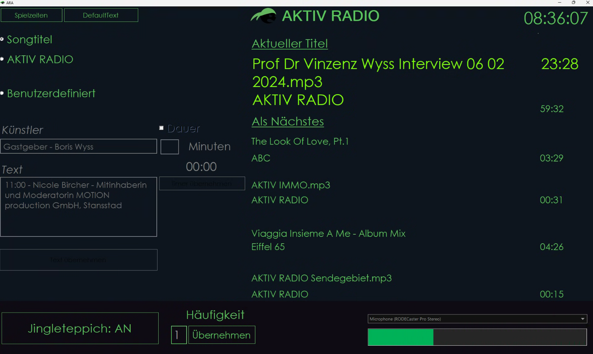
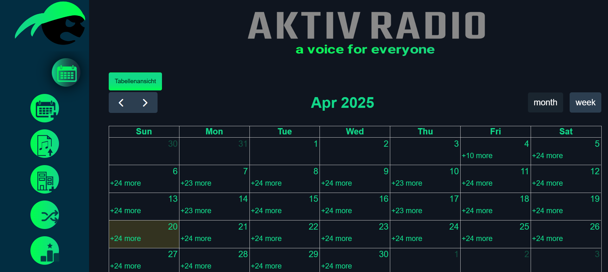
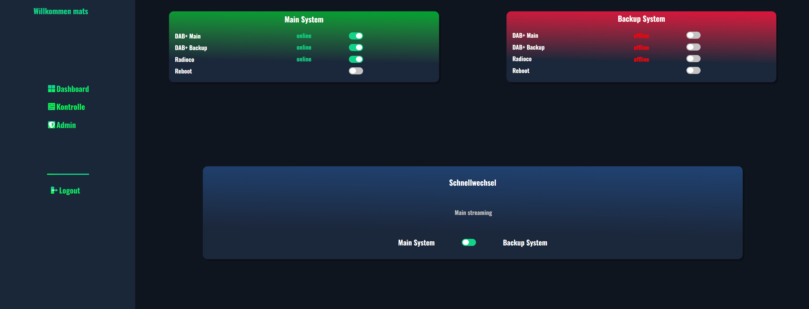
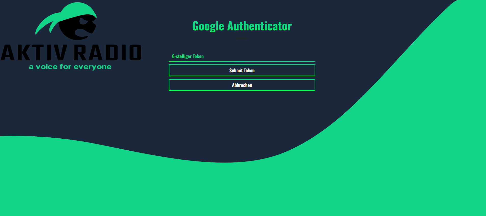
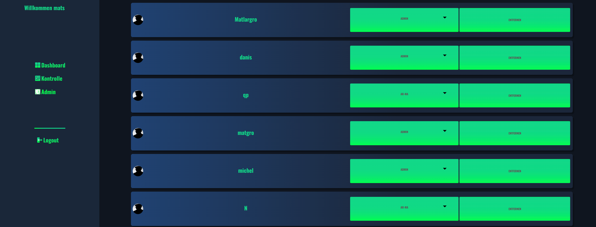

python, angular, nodejs and c#
Aktiv Radio, ein Projekt bei dem ich massgeblich in der Entwicklung und der erfolgreichen Einführung beitragen durfte.
Für Aktiv Radio, habe ich unteranderem ein Musikteppich erstellt. Dieser ist dafür zuständig, dass vollautomatisch Musik oder Spielzeiten bzw. Interviews in eine Liste geladen werden und diese anschliessend abgespielt werden. Das auf dem Bild ersichtlichen Frontend wurde mit C# erstellt. Das Backend wo auch die Musik abgespielt wird, wurde mit Python geschrieben.

Der Musikteppich kann durch einen Zufallsgenerator selbstständig Musik abspielen. Allerdings kann dieser auch über eine Planungsapp gefüttert werden. Als API dient node.js und das Frontend wurde mit Angular 16 entwickelt.

Um die sicherheit des Radios zu gewähren wurden zwei identische System aufgesetzt. Ein Main und Backup System laufen im Parallelbetrieb. Falls das Main System nun z.B. Updates durchführen muss, muss das Backup System den Radio Stream übernehmen. Dafür wurde ein Webbasiertes Controlpanel erstellt. Mit diesem kann man nicht nur Benutzer der Aktiv Radio tools verwalten, sondern man kann auch sehen, welches System aktuell im Betrieb und am Streamen ist. Dieses kann anschliessend gewechselt werden.

Zur Authentifizierung wurde eine Zwei-Faktoren-Überprüfung implementiert. Alle User, die sich registrieren, müssen somit eine Zwei-Faktor-Authentifizierungs-App heruntergeladen haben und von den Adminstratoren freigegeben werden.

Die Freigabe der User können nur von Adminstratoren vorgenommen werden. Diese können auch den jeweiligen Usern eine Berechtigung erteilen.
